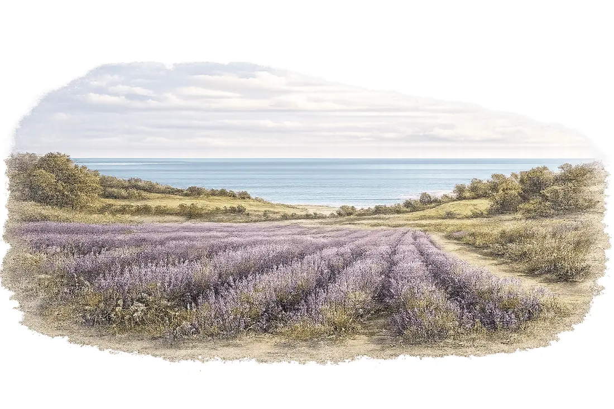
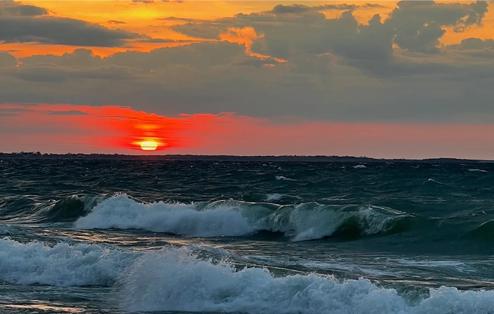

Sincerely Foundation
Some work cannot be sustained by commerce alone.
The Foundation exists to protect and extend the work of Sincerely beyond what any one person, book or business can achieve.

Where it stands today
The Foundation is being formed now. This is what is true of it so far.
- Pledged so far
- A portion of the proceeds from signed copies of Sincerely, Katherine.
- Proposed first
- Scholarships and research, as its first fields of public-benefit support.
- Being designed
- Its governance and its funding arrangements.
What it is for
Three connected aims: the research behind the work, the publishing that carries it, and access for people commerce alone would not reach.
- Research
- Continued development of the Sincerely Human frameworks, and inquiry into integrated leadership and human transformation that bridges practitioner wisdom with scholarly rigour.
- Scholarships and access
- Pathways for communities, leaders and institutions that could not otherwise take part in retreats, learning and gatherings.
- Publishing
- Books, papers and resources that make the work accessible, with decisions driven by impact instead of market pressure.

Built for decades, not quarters
Over time, we envision:
- A body of research that advances understanding of human transformation and integrated leadership. Work that is cited, built upon, and applied across disciplines.
- A library of published works that reaches millions of people, in languages and formats accessible to all.
- A network of leaders, organizations and communities practising essence-led approaches to the challenges of our time.
- A model for how transformational work can be funded and protected without losing its soul.
And ultimately: a way of being and living that represents harmony with self, with each other, and with our planet.
How it will work
Four principles protect the integrity of what the Foundation funds, so that depth is never traded for scale.
- Independence
- Funding decisions follow the mission, not donor preference. The work leads. Resources follow.
- Transparency
- How funds are used is reported clearly and regularly, so that those who contribute can see what their generosity serves.
- Integration
- Research informs the Show. Publishing extends the books. Access widens the gatherings. Nothing operates in isolation.
- Patience
- It measures in decades, not years. Quick wins are not the goal. Lasting impact is.
Follow the Foundation as it takes shape
This is generational work, and the Foundation is how it will be stewarded.
Leave your email and say what you would like to hear about. You will get a note when there is something real to tell you, and not before.